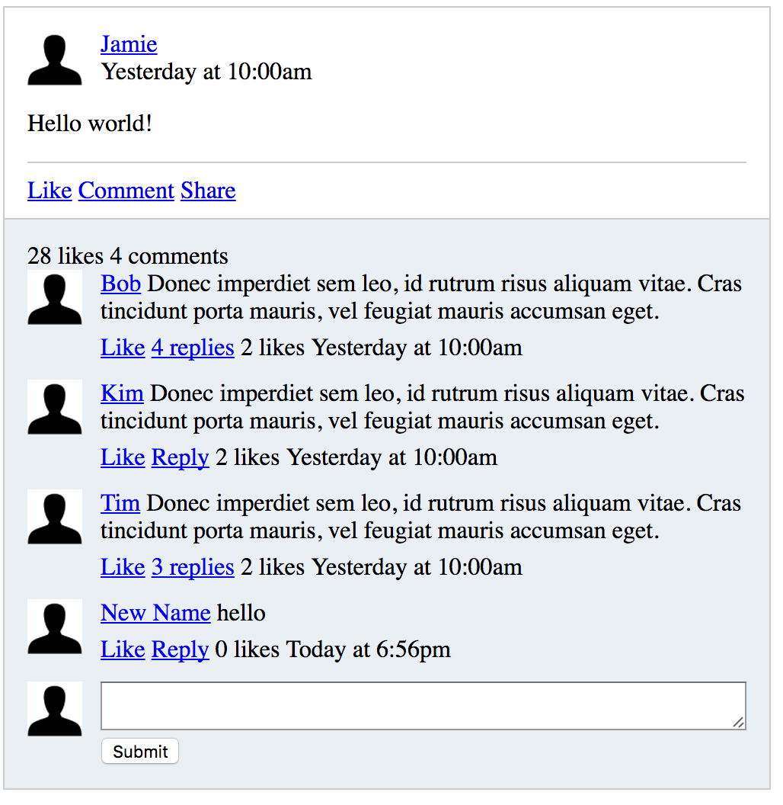
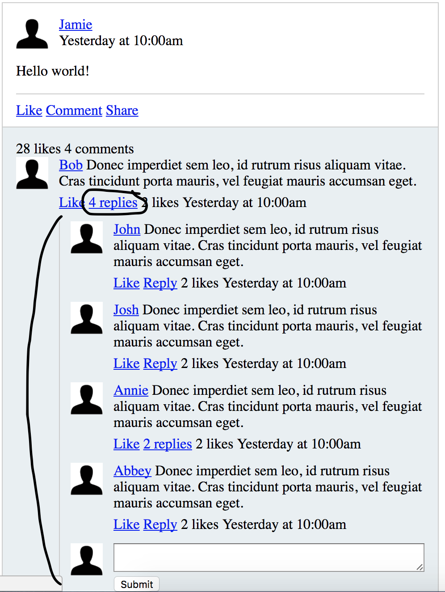
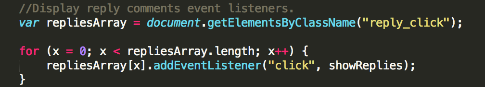

Visual example of navigating HTML code through the Javascript DOM.
Credit: W3 Schools
The Javascript DOM, short for Document Object Model, allows you to integrate Javascript into your HTML code, giving it some much needed dynamic power to build better, more interactive websites. Using the DOM, you are able to navigate through HTML code as if it were tree of interconnected objects. You can dynamically add, remove, or most importantly alter these objects as your use interfaces with your website.
Visual example of navigating HTML code through the Javascript DOM.
Credit: W3 Schools
In the above example you can see how the DOM can be traversed. HTML is structered so that elements or tags are always associated with a parent element (all the way to the top of the page, beginning at the <body> tag, or even higher the <html> tag). Objects on your page (text, images, forms, etc...) are all connected to their parent tags, in a hierarchical tree structure. All of these objects are considered "Nodes" of the DOM, pieces of the document structure.
Using the DOM and Javascript together gives you a powerful tool with which to manipulate your website. As you write HTML you find it's completely static, the web browser simply runs through the code from top to bottom and prints out your website for the user in the exact same user. Any interaction with the website is extremely limited to only what HTML can do. But using a far more powerful language such as Javascript, and dynamically integrating that in with your HTML allows you so much more. As an example, you can have the user click a button and suddenly, without reloading the page, it's entire structure can be re-written.
 
In the above examples you can see a comments system that has been written for the web in HTML and uses Javascript and the DOM to dynamically alter the page based on user input. In the second image the user has clicked a link to see the 4 replies to Bob, and without reloading the page, the replies are shown.
There is an important but easy distinction between "client-side" and "server-side" web development, and yes it's written right into their descriptors. Anything developed to happen "client-side" is code that is entirely managed and processed on your personal computer. You send a request to a website (by typing in thewebsiteimgoingto.com for example), and the server sends back all of the data needed to make the website work. All of the processing through the code happens on your computer, in your web browser. HTML happens completely on the "client-side".
Opposite to this is "server-side" development, where portions of the code are processed completely on the server, and the server sends back to your computer only the HTML needed to display whatever it is you were requesting. This can allow for very complicated processes to happen on a big server, so your computer only has to worry about showing the page. It can also be used to keep confidential information stored securely on the server, so it never interacts with your computer (or anyone else's). Still, a lot can be accomplished on the client-side without needing any extra server-side processing. You might think in the example above the changing of the page's structure was accomplished server-side, when in fact it was dont completely on the client-side using Javascript and the DOM.
We have talked about how using the DOM and Javascript can be a great way to add some true dynamic functionality to your website. "Events" are exactly how they sound, coded events that will tell the computer that when "this" happens go do "that". In the comments example from above, a Javascript event was coded to a DOM node (in this case the '4 replies' link) that said when clicked, display all of the HTML code comprising the 4 replies for Bob. Nothing was sent to the server, everything your computer needed was already loaded, the event just triggered displaying that code. Like I discussed earlier that wouldn't be possible using just plain HTML. We needed Javascript and the DOM in order to add this extra functionality.
Events were described above, essentially a way of telling the computer to do something when something specifically happens to trigger it. But what is that specific something? In Javascript it's called an event listener.

The code that created the event listener used in the above example.
There are several different ways of creating an event listener. In the above example we wait for a "click" on the '4 Replies' link, and than run the function 'showReplies'. The specific link to Bob's replies isn't specifically defined when we use 'addEventListener' becuase it is actually running a loop that is creating an event listener for every replies link on the page.
A bigger part of the events described above, window.event is essentially an event listener taking place across your entire window. Above I showed how an event listener looking for a click on the replies link initiated showing Bob's replies. Is it possible to control even more going on throughout your page? Yes, using window.event allows you to capture a specific moment of everything happening on your page. From the exact location of the user's mouse where they clicked to whether or not they were holding down a specific key.